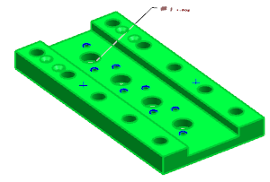
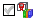
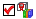
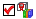
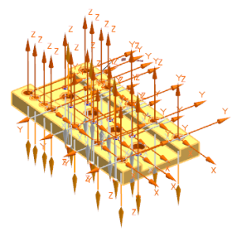

将要加工的几何体识别为特征
您将使用查找特征命令来识别孔、槽、腔体以及用户定义特征。
-
在资源条上，点击加工特征 选项卡。
-
右击 mnf8_fbm_guide_plate 节点并选择查找特征。
-
在查找特征对话框的类型列表中，选择参数化识别。
-
在要搜索的几何体组的搜索方法列表中，选择工件。

-
在要识别的特征组的列表中，确保已选中参数化特征节点旁的复选框
 。
。 -
展开参数化特征节点：
在参数化特征节点下方，清除 Turning 以及 WEDM 旁的复选框。您清除了您不想要识别的特征类型。
-
清除 SampleColorFeatures 旁的复选框。
您的列表看起来应该和下图类似： Recognition
ParametricFeatures
  BOSSES CORNER_NOTCHES GROOVES HOLES POCKETS SIDE_NOTCHES SLOTS STEPS SURFACES TURNING WEDM SampleColorFeatures
 BOSSES CORNER_NOTCHES GROOVES HOLES POCKETS SIDE_NOTCHES SLOTS STEPS SURFACES TURNING WEDM SampleColorFeatures -
在加工进刀方向组的矢量列表中，选择 ZC。
-
在已识别的特征组中，点击查找特征 。
处理器将查找特征并将它们添加到已识别的特征列表中。

您可以从这个列表中移除不想处理的特征。平面特征不需要铣削，因为您使用部件轮廓选项定义毛坯时没有添加偏置。
-
在已识别的特征列表中，选择特征 SLOT_RECTANGULAR。
-
点击移除
 。
。 -
选择特征 SURFACE_PLANAR_RECTANGULAR。
-
点击移除
。 -
点击确定。
特征将被添加到加工特征导航器中。

-
展开加工特征导航器并向右滚动以查看源列。
注意到所有特征的源列中都显示已识别，这表示 NX 已使用参数化识别选项找到这些特征。